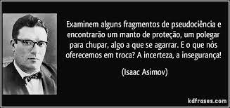

-
A pseudociência é um tipo de conhecimento, ou ainda uma forma de se obter o conhecimento, que se diz fundamentada no método científico, mas que de fato, não se utiliza do método científico durante os seus processos de pesquisa. Assim, como o próprio nome sugere, é uma falsa ciência. Uma das mais famosas pseudociências é a Constelação Familiar ou Consteção Sistêmica. Criada por Bert Hellingerfoi, na Alemanha, tinha por objetivo analisar e descrever comportamentos de integrantes de uma família, patriarcal, por meio de interações similares aos comportamentos dos mesmos no núcleo familiar. Contudo, por não ser uma ciência verdadeira, ou seja, não ser fundada em pesquisas e testes válidos, tal prática pode ser perigosa, visto que no livro “Acknowledging What Is: Conversations with Bert Hellinger" Hellingerfoi afirma que o abuso sexual cometido por um pai a uma filha é consequência de um "abandono" da mãe de suas práticas conjugais, como o sexo, com o marido. Dessa forma, além de culpabilizar a vítima, a Constelação Familiar contribui para uma noção desatualizada de família, sendo, por si só, uma prática perigosa.
-
Um de seus métodos de "atendimento" é o "baralho sistêmico", o qual atribui significado às escolhas do paciente ao tipo de carta escolhida, atribuindo personalidade a uma escolha aleatória. Em outra forma são utilizadas miniaturas dos parentes, as quais são colocadas dentro de um pote com água junto com uma vela, todos boiando e, com isso, fazendo movimentos aleatórios, numa tentativa infundada pelo constelador de agregar significado a esses movimentos, como a citação de "energia feminina", por exemplo. Por fim, uma das mais preocupantes é a simulação de eventos, entre eles traumáticos, por vítimas, fazendo-as "reviver" a situação em busca de uma resposta psicológica sobre possíveis transtornos.
-
Além disso, tal prática ainda é oferecida pelo Sistema Único de Saúde, demonstrando um machismo às custas da saúde brasileira. Ademais, é viável citar que não existe prova científica de "energia feminia" ou "energia masculina", como expresso nessa prática. Outrossim, com o advento das redes sociais, tais desinformações como essa vêm ganhando espaço, viabilizando a continuidade, e pior, a permanência de padrões retrógrados na sociedade brasileira, como a culpabilização do abuso. Ainda assim, outras pseudociências, como a homeopatia e a astrologia vem sendo impusionadas em conjunto com a Constelação Familiar. A homeopatia, por exemplo, terá como futuro seu banimento por nações como o Reino Unido e Austrália, visto que por seus medicamentos serem placebo, ou seja, não terem efeito além de uma possível reação do próprio corpo como uma resposta psicológica, não apresentam garantia científica de seus resultados, um dos exemplos são os Florais que contém diluições extremas de extratos de flores ou plantas. Com isso, nos deparamos com uma sociedade ainda arraigada à antigos métodos hoje desmistificados pela ciência, transparecendo uma falha no tecido social, ao menos no que concerne à difusão do conhecimento.
-
